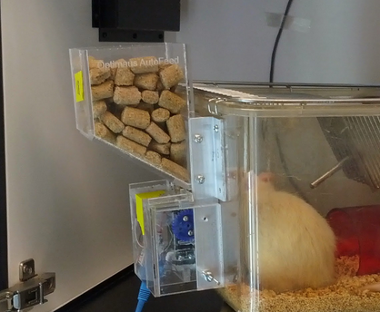
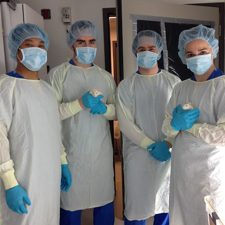

About Us
Optimouse is a small engineering start-up company based out of Simon Fraser University. They strive to create modular customizable products that support animal research labs. Their first product is the AutoFeed system, a highly customizable automated feeding system for rodents.
About AutoFeed
The automated feeding system, or as we call it 'AutoFeed', is designed to present food to the animals and then restrict access to the food on any customizable schedule. The animal is seperated from the food by small bars that prevent the them from storing the food or 'hoarding' the food, but still allow them to feast when they please. The distance between bars is relient on the size of standardized pellets, though they can be easily altered to accomodate any dry food. A few of the key features of the physical feeding apparatus are listed below:
The system is controlled completely from a micro computer inside a sophisticated Control Unit (CU). All feeding apparatuses are connected to the CU via ethernet ports. The CU gets its instructions directly from a Google Calendar that is integrated with either an existing google account, or a new one. A few key features of the software and highlighted below:
The software of AutoFeed system was designed to be scalable up to 64 feeders, disregarding space limitation for ethernet ports on the Control Unit. With The AutoFeed system, a technician or researcher can set any schedule, any time, from anywhere.
No more late night or weekend trips up to the lab to feed the animals on their strict diets. Let AutoFeed do it for you!
The Team
Optimouse is composed completely of Robert Lepine, Kevin Killy, and Kenny Woo, who are greatly indebted to their supporting network of scientists, engineer, and researcher colleagues. Feel free to contact any of us if you have any questions.

